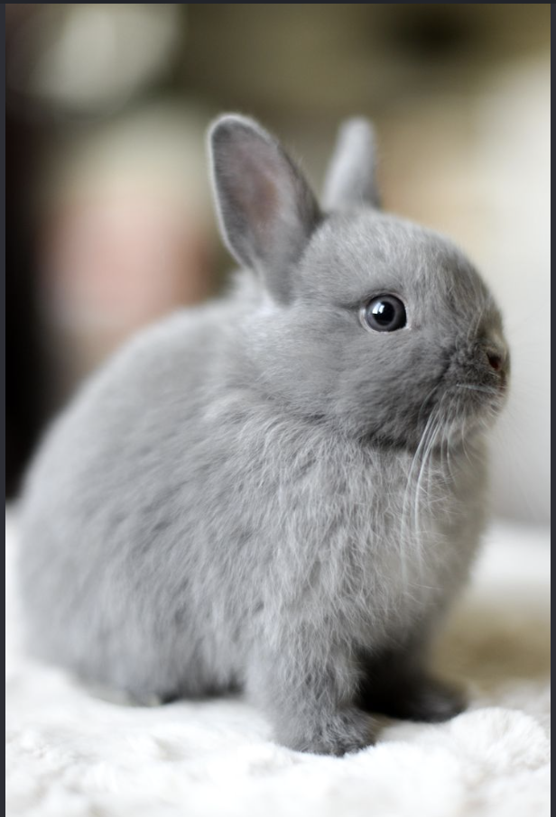
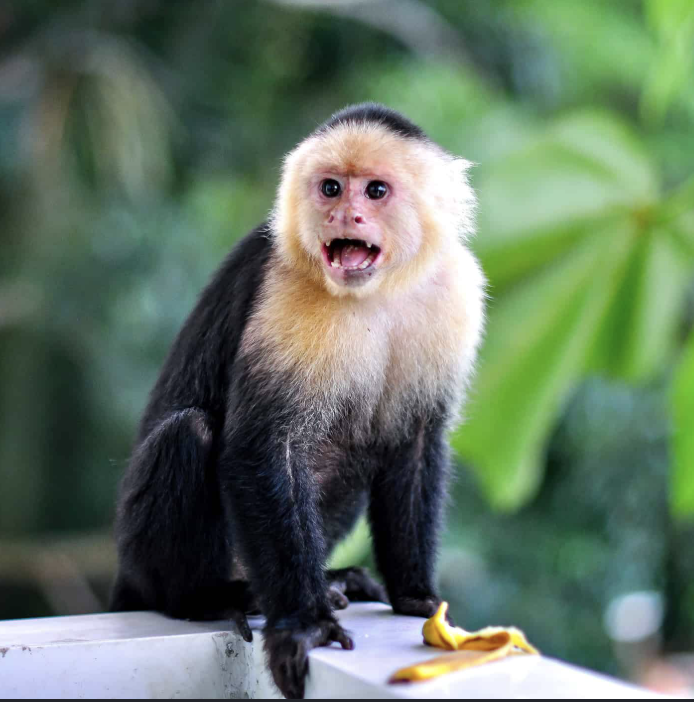
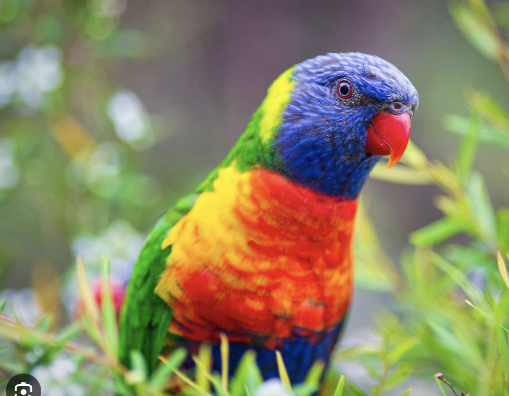
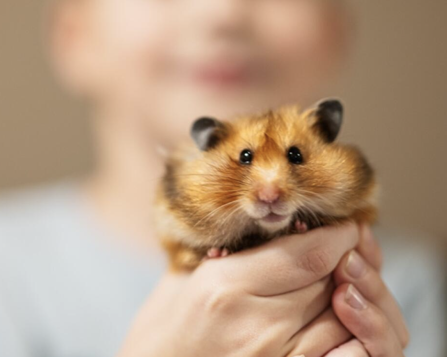
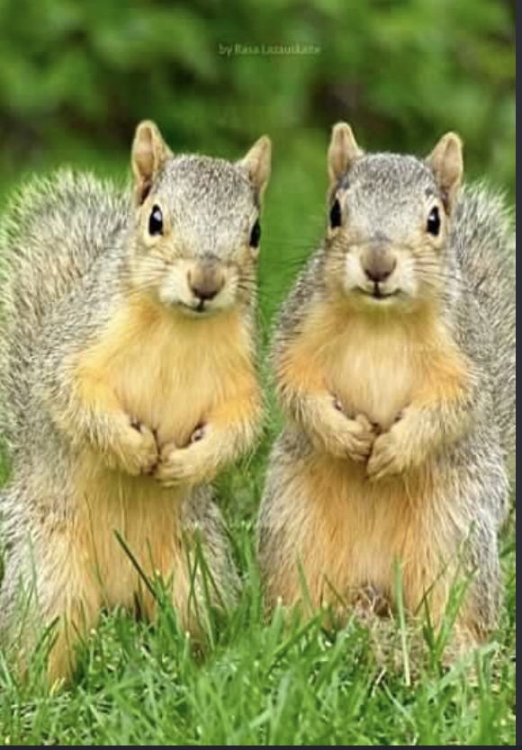
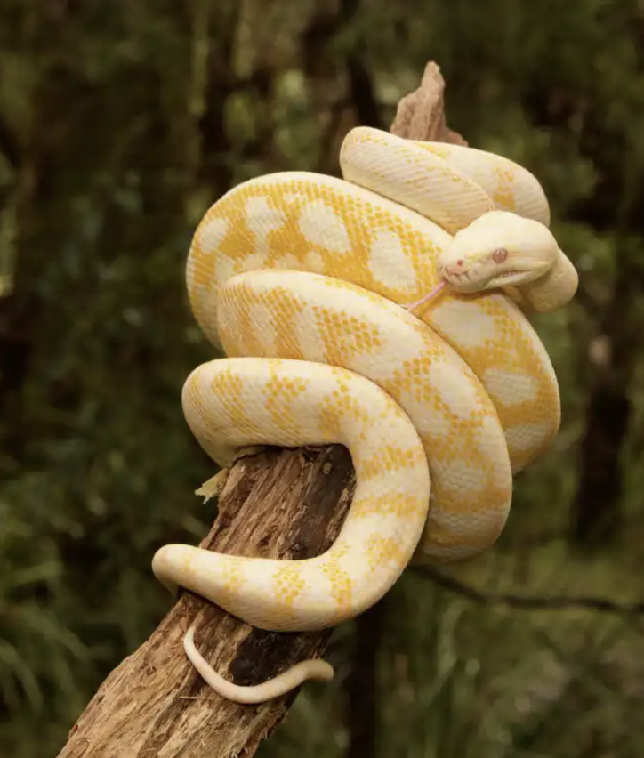
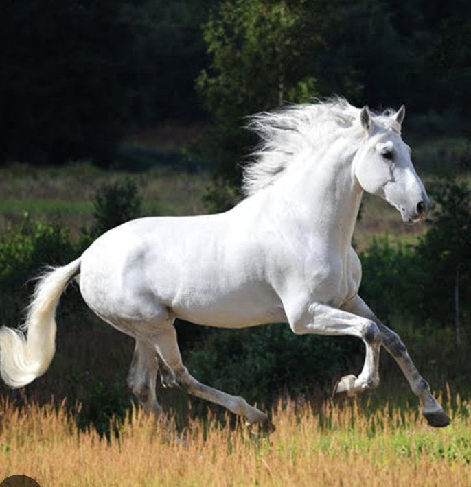
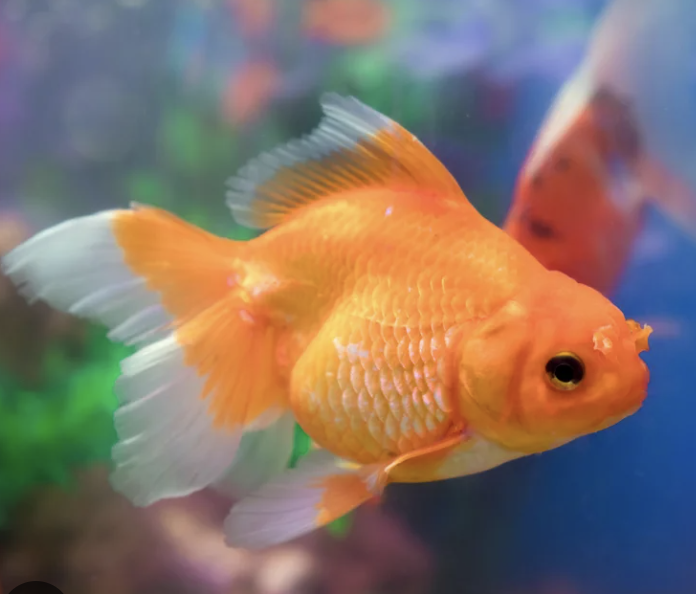

Meet Jerry
Jerry is a charming and friendly dog with a heart of gold, and he is looking for a loving home to call his own. He is a medium-sized mixed breed with soft, fluffy fur and soulful brown eyes that will melt your heart. If you are looking for a loyal and loving companion who will bring endless joy into your life, Jerry may be the perfect pet for you. Adopting Jerry means giving him a second chance at a happy life, and you will be rewarded with the unconditional love and companionship that only a dog can provide. So don't hesitate to bring this wonderful pup home today!

Meet Tom
Tom is a handsome and affectionate cat who is looking for his forever home. He is a medium-sized domestic shorthair with sleek black and white fur and striking green eyes that will capture your heart. If you are looking for a loyal and loving companion who will provide you with endless joy and entertainment, Tom may be the perfect pet for you. Adopting Tom means giving him a second chance at a happy life, and you will be rewarded with the unconditional love and companionship that only a cat can provide. So why not bring this wonderful feline into your life today?

Meet Coco
Coco is a fluffy grey rabbit who loves carrots, cuddles and zooming around the garden. She has a calm personality and a stunning, velvety grey coat. Perfect for indoor living, they are quiet, curious, and love exploring soft rugs or nesting in cozy corners. Whether they are happily munching on fresh hay or gently nudging your hand for head scratches, this rabbit will bring so much peace and joy to your life. If you have a quiet space and a heart full of love, this lovely grey bunny is ready to meet you!

Meet Bongo
Bongo is a clever little monkey who loves bananas, puzzles and swinging from anything he can reach. He thrive on deep social bonds and need a dedicated, loving caregiver who can provide a stimulating environment and specialized care. By opening your heart to a monkey in need of a forever home, you are giving them a vital second chance at a vibrant and fulfilling life.

Meet Rio
Meet your next favorite conversationalist! Our vibrant, chatty Rio is looking for a loving forever home filled with laughter and daily chats. If you love a lively household and want a clever, feathered friend who always has something to say, this lovable chatterbox is the perfect match for you.

Meet Nibbles
Nibbles is a tiny golden hamster who runs on his wheel all night and stuffs his cheeks all day. Small, sweet and easy to look after. He loves exploring his tunnels and running on his wheel. Perfect for anyone looking for a small, delightful companion.

Meet Acorn & Pip
Acorn and Pip are a pair of playful squirrels who must be adopted together. They love nuts, climbing and hide-and-seek. These two are incredibly energetic, full of personality, and completely inseparable. They need a dedicated caregiver who understands their specific dietary, space, and socialization needs. If you have the time, space, and experience to give these lively companions a safe and happy life, please reach out for more details.

Meet Monty
Monty is a calm, gentle python who enjoys warm rocks and quiet evenings. He is perfect for someone who wants an unusual friend. He is a healthy, low-maintenance companion who is comfortable with gentle handling and spends most of his day relaxing in his favorite spots.

Meet Snow
Snow is a graceful white horse with a soft mane and a kind heart. He loves long rides, fresh grass and lots of open space. He combines breathtaking grace with a gentle, willing spirit. With a coat like winter snow and eyes full of kindness, he is ready to become your ultimate partner, whether on the trails or in the pasture. Beautiful, loyal, and looking for a second chance, this magnificent horse just needs a dedicated owner to start an exciting new chapter.

Meet Goldie
Goldie is a shiny orange goldfish who loves saying hi to everyone at the glass. A calm pet for any room. This sweet, low-maintenance goldfish is ready to bring some calm and color to a loving home. If you have a cycled tank and a little room in your heart, please adopt this beautiful fish today!